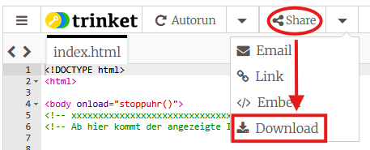
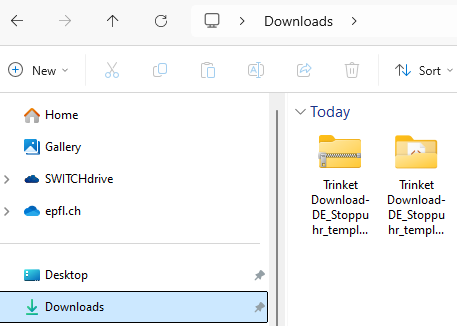
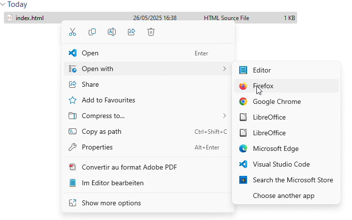

Glückwunsch!

Wenn du es bis hier geschafft hast, hast du bereits eine funktionierende Stoppuhr! Der Hase wird sich freuen. Bevor du weitermachst, ist es höchste Zeit deine Arbeit zu speichern!
Dein Programm herunterladen
| Wenn du zum Schluss des Workshops dieses Fenster schliessen wirst, wird dein Fortschritt verloren sein. Darum nehmen wir uns kurz Zeit um sicherzustellen, dass nichts verloren geht. Klicke auf den "Download"-Button oben am Programmierfenster, um dein Stoppuhr-Programm herunterzuladen.
Du kannst das auch für deine alten Programme machen. Geh dazu zurück, wo du sie programmiert hast. |
 |
So öffnest du die Uhr lokal in deinem Browser
Wenn du dein Programm heruntergeladen hast, kannst du es auf jeden Webbrowser (Firefox, Safari, Chrome, Edge, …) auf deinem Computer laufen lassen. Wie das funktioniert erklären wir hier. Frage gerne Erwachsene um Hilfe falls du dir unsicher bist.
| Öffne den File Explorer (auf Mac den "Finder") um deine heruntergeladene Datei zu finden. Diese ist ein zip-Ordner mit Namen beginnend mit "Trinket Download-DE" und befindet sich höchstwahrscheinlich im "Downloads" Ordner. Mache einen Rechtsklick auf den zip-Ordner und klicke auf "alle extrahieren". Der so entstandene Ordner enthält dein Programm: index.html. Wenn du dein Programm gefunden hast, kannst du einen Rechtsklick darauf machen und auf öffnen mit klicken. Wähle dann dein Lieblingsbrowser aus (Firefox, Safari, Chrome, Edge, ...). |
 |  |
Deine Digitaluhr verschicken
Dein Programm kannst du ganz einfach verschicken und es funktioniert auf allen Computern! Alles was du dafür tun musst, ist dein index.html Programm zu verschicken (zum Beispiel per E-Mail). Erkläre auch der Person, wie sie es auf ihrem Computer öffnen kann (wie oben erklärt).